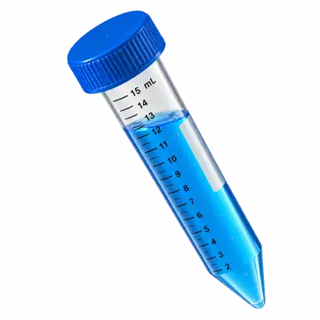

کاتالوگ تجهیزات آزمایشگاه
پلاستیکآلات
لولههای سانتریفیوژ مخروطی (فالکون)
Conical Polypropylene Centrifuge Tubes

لولهٔ سانتریفیوژ مخروطی · ۱۵ میلیلیتر
لولهٔ مخروطی سانتریفیوژ که در گفتار آزمایشگاهی گاهی «فالکون» نامیده میشود، یک نام عمومی برای این شکل از لوله است و الزاماً به یک برند خاص اشاره نمیکند. بدنهٔ پلیپروپیلن، درجهبندی، ناحیهٔ نوشتن و نوع درپوش را باید با نیاز آزمایش و مشخصات روتور تطبیق داد.
گزینهٔ انتخابشده
لولهٔ سانتریفیوژ مخروطی · ۱۵ میلیلیترلولهٔ مخروطی پلیپروپیلن با درجهبندی و ناحیهٔ نوشتن؛ نمونهٔ مرجع Fisher/Falcon برای رسوبدادن و جداسازی نمونه در سانتریفیوژ معرفی شده است.